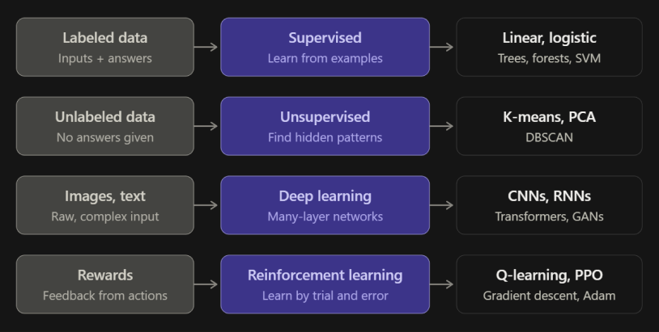
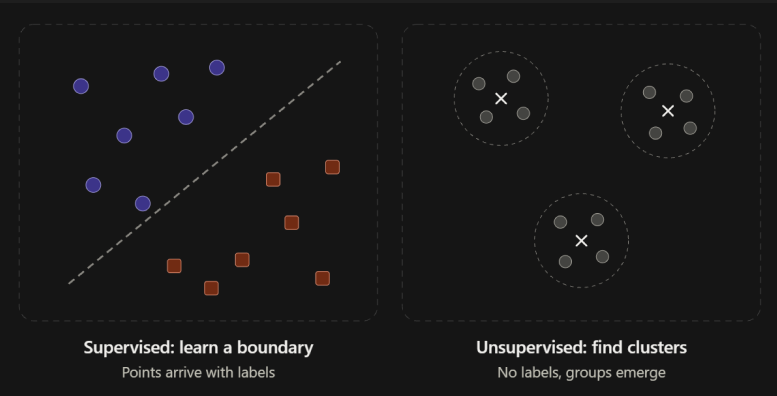

Computing Algorithms

1. Supervised Learning (Learning from Examples)
- What it is: Models trained using input data paired with correct, human-labeled outputs.
- Key algorithms:
- Linear & Logistic Regression: Fits straight lines for continuous numbers or uses the sigmoid function for binary classification (spam vs. not spam).
- Decision Trees & Random Forests: Makes recursive feature splits or combines hundreds of trees to boost accuracy and prevent overfitting.
- Support Vector Machines (SVM): Finds optimal hyper-planes to separate data classes.
- Sources:
- Coursera / IBM Skills Network – Top Machine Learning Algorithms Explained
- GeeksforGeeks – Artificial Intelligence Algorithms Overview
2. Unsupervised Learning (Finding Hidden Patterns)
- What it is: Algorithms that analyze completely unlabeled data to discover structures, groupings, or anomalies independently.
- Key algorithms:
- K-Means Clustering: Groups data points by minimizing distances to cluster centroids.
- Principal Component Analysis (PCA): Reduces dimensionality while retaining core variance.
- DBSCAN: Groups dense regions and flags isolated points as noise.
- Sources:
- AWS Machine Learning Tech Guide – What is Unsupervised Machine Learning?
- Tableau Learning Center – Artificial Intelligence Algorithms: A Complete Overview

3. Deep Learning & Neural Networks
- What it is: Multi-layered neural networks built to handle high-dimensional inputs like images, video, and human language.
- Key architectures:
- CNNs: Captures spatial hierarchies in visual data (computer vision/object detection).
- RNNs & LSTMs: Processes sequential time-series data across time steps.
- Transformer Networks: Uses self-attention mechanisms, powering modern Large Language Models (LLMs) like GPT and BERT.
- GANs: Pits a generator against a discriminator to create hyper-realistic synthetic data.
- Sources:
- Wikipedia – List of Artificial Intelligence Algorithms
- Google Cloud Discover – Deep Learning Architectures Explained
4. Reinforcement Learning & Optimization
- What it is: Algorithms focused on decision-making, environmental feedback, and iterative weight adjustments.
- Key algorithms:
- Q-Learning & DQN: Model-free learning where agents maximize cumulative rewards.
- PPO: Policy-gradient algorithm used to fine-tune modern AI assistants via RLHF.
- Gradient Descent & Adam Optimizer: The calculus-driven engines that adjust neural network parameters to minimize error loss.
- Sources:
- Medium (Data Science Section) – List of 100+ AI Algorithms
- Nature Journal – Mastering complex systems with deep reinforcement learning and search